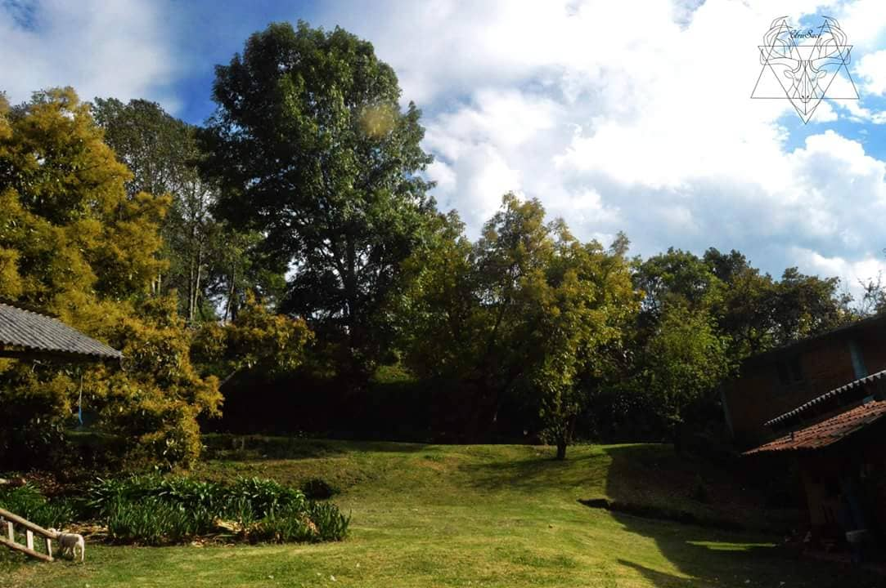
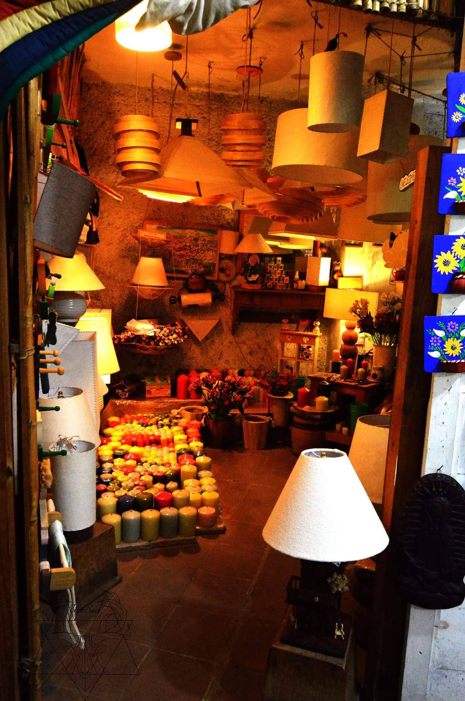

Personal Photography
LLevo años amando la fotografía de paisaje y social; en cada viaje que realizo trato de tomar fotografías.
Mi tesis en la universidad fue entorno a este arte, donde trate el tema del feminicidio en Puebla y como una fotografía podría llegar a impactar sin ser tan realista.
- Project By:
- Uriel Sace
- Categories:
- Photography
- Client:
- S/N
- Made In:
- 2016 - Actualidad
